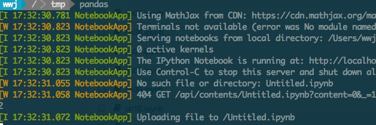
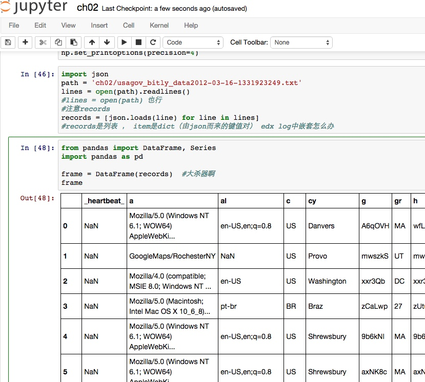
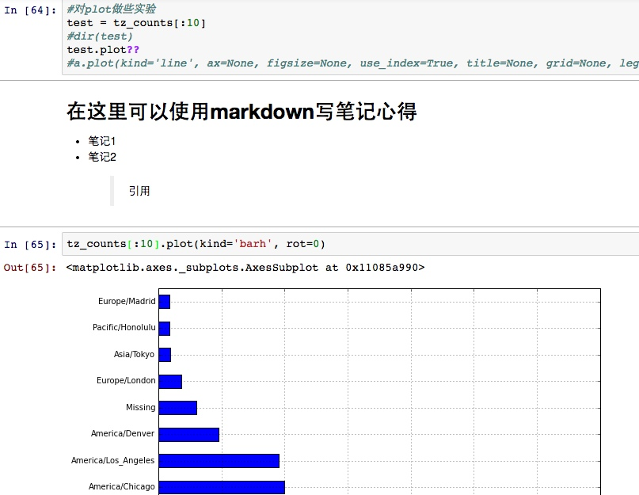

-
如果遇到了生活中不顺利的事情，你也只是需要一个新技巧了
-
我记下学习和做过的每件事。所以我很轻松可以回忆起自己的各种心理状态
-
只有你确定了你的目的，你才会应用你所学到的内容去实现你的目的
如果你知道以上三句话出自哪里，你会鄙视我三天的
所以我当然不会说出它们的出处，可偏偏你又会去搜索，我偏偏又喜欢到不得不引用它们orz
近来不少小伙伴有兴趣学编程，时常会被要求给些建议什么的。
从自己的经历说起~
大四去西安玩，途中快读完《Python for Data Analysis》,兴致盎然，不能入睡。书的作者也是Pandas的作者（Pandas是基于Python的结构化数据分析利器）。书中案例的操作性极强，精彩纷呈。当时在车上觉得大致掌握了Pandas。
而后从事的工作与数据分析关系不大。长时间没有接触它，等前段时间再想用它来从log(json格式)中做些分析/统计，却连如何将json数据加载到DataFrame都给忘了orz
不知你是否也有过此类尴尬，以至心有戚戚。对于那些不是日常使用的工具，如何保证学完后，能随时取用当时学会的知识，而不是遗忘之后，每次都从头再学一遍。
当时学会是远远不够的，我们更关心的是需要时拿得出来用。用兵一时
我的学习偏偏又习惯由兴趣驱动，等到想用的时候，兴趣不在这里，让我硬着头皮去再学一遍，恐怕效率是不高的。
于是我琢磨能否尽可能地留存学会的东西，或者复习时能快速进入掌握时的状态，我能想到的，且实践过行之有效的一些方法如下：
- 在书籍上批注，这样其实相当于给记忆打快照，日后再翻有助于勾起记忆
- 一边学习，一遍在印象笔记做笔记
- 学会某些知识后，即时梳理，整理为博客，给身边的小伙伴布道，将学会的东西表达出来，加深理解的同时，也方便自己此后穿梭回这个状态点。
以上几点便是我学习新东西时，习惯采用的方法，知识的留存率的确比采用它们之前提高不少，可也不尽如人意:
- 第一点实施起来并不方便，首先你得买纸质书，抛开价格贵，难搬家，易遗失不说，不少资料是根本没有纸质版的。我见过最好的替代方案是将素材拍到Noteself中，而后在其中做笔记，这是最近从一个小伙伴那儿学来的，笔记全部交给Noteself，从不丢失，随时可用，她的技能树极其茂盛，我想Noteself是很重要的原因，所谓善假于物。
- 我大约是那种离开印象笔记就生活无法自理的人。但即便如此，它也有不令人满意的地方，首先没法用markdown，这样一来做技术相关的笔记是很不方便的（弥补方法是使用web版本的印象笔记，而后用chrome的markdown here插件转化markdown）。另外学习中做的笔记往往是很碎片的，如果不定期整理/合并很难以复用，可能比资料本身还乱。
- 写博客是我现在最喜欢的一种学习方式，如果你还没开始，或不够坚定，建议看看刘未鹏的为什么你应该（从现在开始就）写博客，缺点的话，大约是它不适合容纳细碎的知识。
回到我们的编程话题。以上几点适用于大多数的学习，针对Python编程，我最近找到更好的方法，用了几天，觉得效率简直飞起。分享过来。
杀器就是IPython Notebook
ipython就已经够神器了，Tab键补全、魔术方法、与一堆科学计算库的搭配，以及强大的调试功能。
我此前有写过一篇ipython使用笔记
IPython Notebook是一种基于Web技术的交互式计算文档格式，同时也是计算工具（界面）
notebook的页面都被保存为.ipynb 的类JSON文件格式。这也是 Notebook 最吸引人的地方，其中可以写python代码，可以写markdown文档，可以呈现图表...
你还可以将写好的.ipynb上传到github，分发给小伙伴，拿到.ipynb的小伙伴在IPython Notebook中加载执行它，对你的工作便一目了然，你们近乎共享了编程的过程。你在.ipynb中加上批注和说明之后分发出去，它就成为绝佳的教学和交流的载体！
此外我最近在用它学习Pandas，以便做edX tracking logs的数据分析工作，简直酸爽
pydata-book是《Python for Data Analysis》一书中相应的示例源码。这本书我翻过，所以直接将其源码加载到ipyhton notebook里开撸，偶有不懂，通过交互式探索或是查阅书籍，很快就回忆起来了，而我又可以随时在其中注释批注，用markdown写心得或疑问，而所有这些，都连同可执行的代码保存在.ipynb里，
如果中途我遇到问题，我完全可以将代码连同批注和疑惑发给别人（仅是.ipynb这个文件），对方完全看得到我的思维过程。他也在.ipynb中解答，之后回传给我即可，多便捷的交流过程啊！
我的Pandas学习环境
cd ~
mkdir pydata
cd pydata
git clone https://github.com/pydata/pydata-book
virtualenv pandas_env
source pandas_env/bin/activate
pip install ipython pyzmq jinja2 tornado jsonschema pylab
vim ~/.zshrc
#我用的是zsh，你用bash的话，对应的是 .bashrc
alias pandas='cd ~/pydata/pydata-book&&source ~/pydata/pandas_env/bin/activate&&ipython notebook'
退出重新进入shell，输入pandas，就进入学习环境了
这样一来，我每次想学习的时候，直接在终端输入pandas就可以开始了！循着上次的注释和笔记，很快就可以进入学习状态



后记
安装错误:No module named zmq.eventloop
解决方案: sudo pip install pyzmq --upgrade